Toolbox Settings
From this window you can adjust main settings, edit initial pools, set up audios and edit properties in database.
'Toolbox Settings' window has four tabs:
- Main Settings
- Pooler
- Audio Player
- Database
Let's look all them.
Main Settings
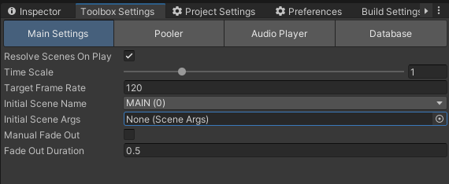
There you can edit following properties:
Resolve Scenes On Play: Changes OnPlay behaviour. If enabled, then Toolbox will close all opened scenes and start all withMAINscene (after stop playing, all scenes will be restored).Time Scale: An ordinary time scale, that affects all scripts, derived fromMonoCached.Target Frame Rate: Default target frame rate option, which will be setted at startup.Initial Scene Name: The scene that will be loaded first afterMAINscene loaded.Initial Scene Args: Arguments for initial scene.Manual Fade Out: If enabled, then you can manually control when black screen will be faded out after initial scene loaded, otherwise Toolbox automatically fades it out right after initial scene loaded.Fade Out Duration: Simply controls fade out duration whenManual Fade Outdisabled.
Pooler
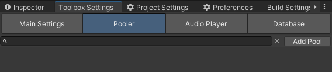
From this window you can edit initial pools list and adjust properties of each.
You can create new pool by clicking 'Add Pool' button.
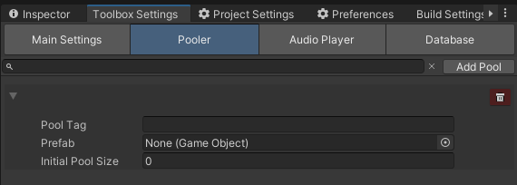
Each pool has following parameters:
Pool Tag: The tag, through which you can retrieve pooled object.Prefab: Prefab which pool will instantiate objects.Initial Pool Size: Count of an objects tha will be added to the pool at start.
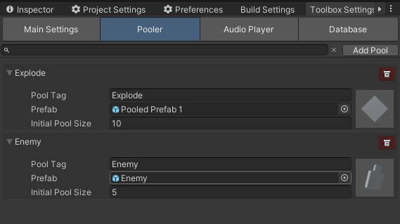
To delete pool, simply click button with trash icon.
You can also search necessary pool by writing its tag in search field.
Audio Player
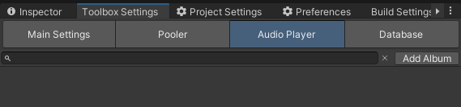
From this window you can edit audio albums list and adjust properties of each.
You can create new album by clicking 'Add Album' button.
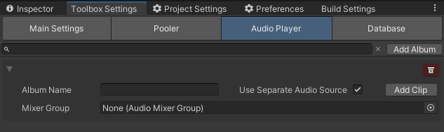
Each album has following parameters:
Album Name: Name of the album, through which you can get access to clips it containing.Use Separate Audio Source: If enabled, then Toolbox will create separate audio source for this album.Mixer Group: Mixer group through which you can control volume, effects etc of the audio source, binded to this album.
To delete album click button with trash icon.
To add clips in album click 'Add Clip' button.
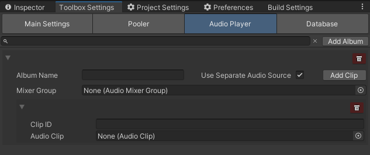
Each clip has following parameters:
Clip ID: ID of the clip, through which you can retrieve it.Audio Clip: Actual audio clip asset.
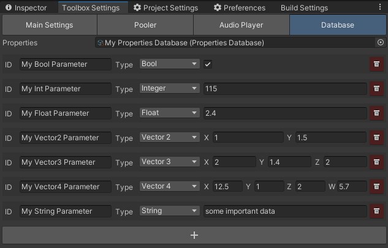
To delete clip click button with trash icon.
Database
From this window you can define database for your project. If you opening it first time it will look like this:
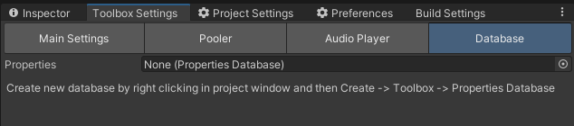
To create new database right click in project window and go to Create/Toolbox/Properties Database.
It will create new scriptable object with all variables in it.
Rename it as you wish and drag into 'Properties' fieeld in 'Database' tab of Toolbox Settings window.
After adding database you can define your propertiess.
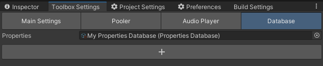
To add new property click '+' button.
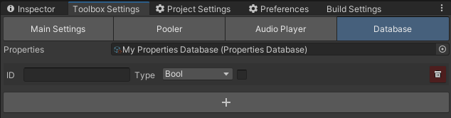
Each property has following parameters:
ID: ID of the property, through which you can retrieve it.Type: Type of the property. Can be one of the following:Bool,Float,Int,Vector2,Vector3,Vector4,String.Value: Actual value of the property.
To delete property click button with trash icon.